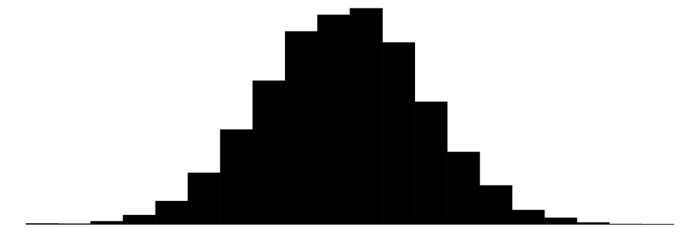
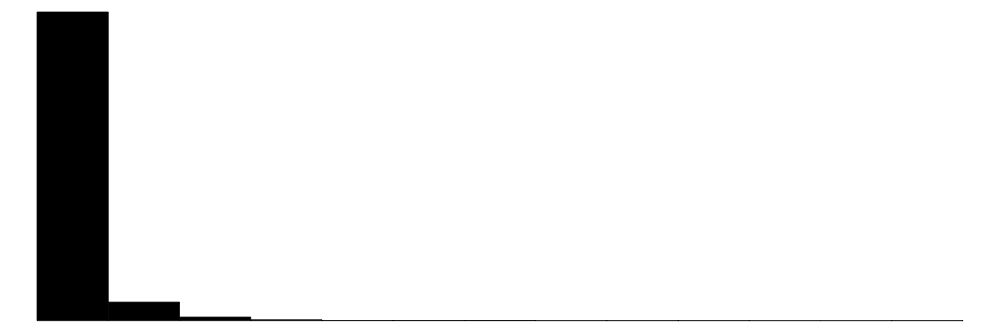
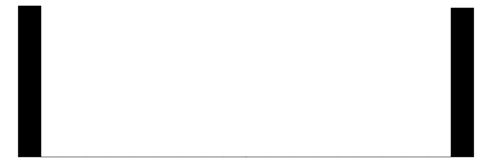
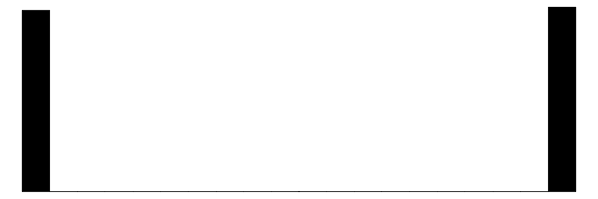
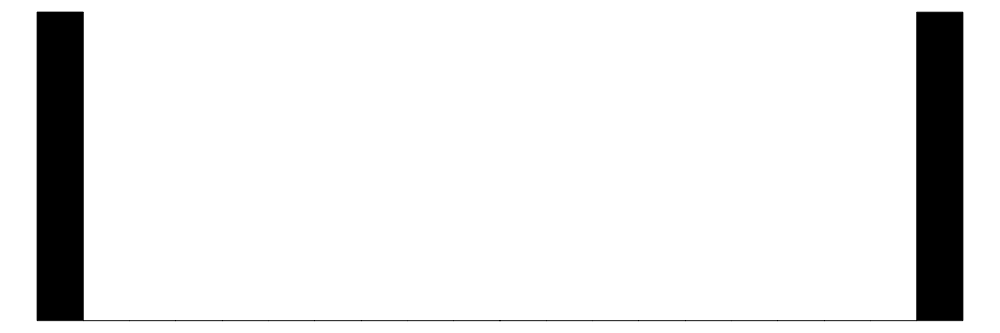
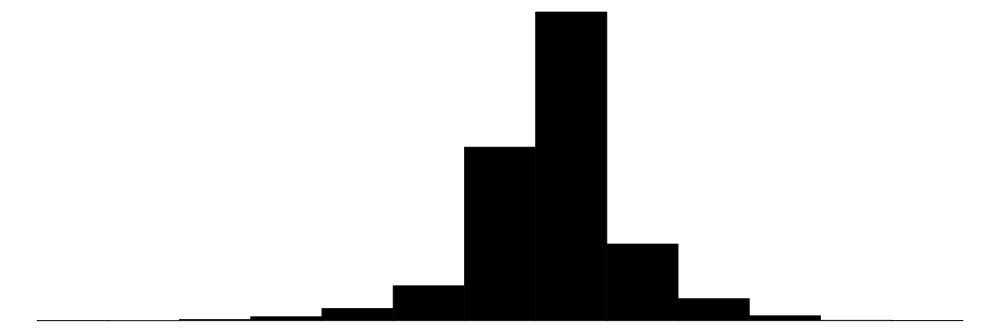
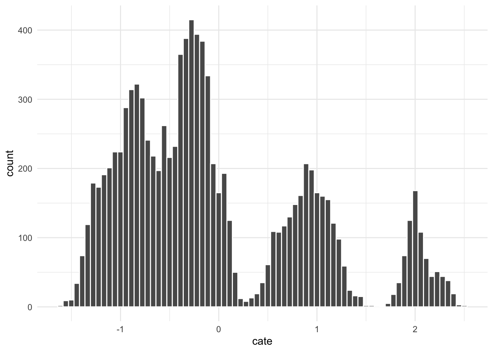

set.seed(1909)Causal Forest illustration for M
Preparations
There is randomness involved. We set seed.
We now load the libraries to use
library("modelsummary") # For summary stat tables
library("readstata13") # For loading Stata files (can also use haven)
library("ggplot2") # For charts
library("grf") # Generalized Random Forests
library("DiagrammeR") # Plot trees
library("dplyr") # Data manipulation tools
Attaching package: 'dplyr'The following objects are masked from 'package:stats':
filter, lagThe following objects are masked from 'package:base':
intersect, setdiff, setequal, unionlibrary("policytree") # Get optimal policy
library("fastDummies") # To create dummiesExample data
Let us load the example data from Stata into the dataframe called df.
df<-read.dta13("statadata.dta")Let us have a look at the data
datasummary_skim(df)| Unique | Missing Pct. | Mean | SD | Min | Median | Max | Histogram | |
|---|---|---|---|---|---|---|---|---|
| height | 39 | 0 | 170.1 | 5.0 | 150.0 | 170.0 | 189.0 |  |
| par_inc | 10000 | 0 | 751398.6 | 1016906.2 | 14674.5 | 445576.4 | 24008444.2 |  |
| par_sch | 13 | 0 | 14.1 | 2.8 | 9.0 | 14.0 | 21.0 | |
| native | 2 | 0 | 0.5 | 0.5 | 0.0 | 0.0 | 1.0 |  |
| female | 2 | 0 | 0.5 | 0.5 | 0.0 | 1.0 | 1.0 |  |
| Treatment | 2 | 0 | 0.5 | 0.5 | 0.0 | 0.0 | 1.0 |  |
| y | 10000 | 0 | 0.5 | 2.0 | -12.3 | 0.5 | 10.9 |  |
OLS heterogeneity as a comparison
We are interested in the effect of Treatment on y and whether it varies by Native, Schooling, and Female. We do that by simply conditioning on these samples.
| All | Female | Female & | Female & | Male & |
|---|---|---|---|---|---|
(Intercept) | 0.509*** | 0.521*** | 0.508*** | 0.534*** | 0.541*** |
(0.028) | (0.041) | (0.050) | (0.065) | (0.066) | |
Treatment | -0.052 | -0.070 | 0.279*** | -0.410*** | 0.975*** |
(0.040) | (0.058) | (0.070) | (0.091) | (0.091) | |
Num.Obs. | 10000 | 5043 | 2498 | 2545 | 1513 |
R2 | 0.000 | 0.000 | 0.006 | 0.008 | 0.070 |
+ p < 0.1, * p < 0.05, ** p < 0.01, *** p < 0.001 | |||||
The average treatment effect is basically zero, but it clearly conceals substantial heterogeneity. Looking only at the subsample of females does not help us much, but if condition on female and native we observe significant effects! But how do we proceed? Even with only three variables (female, native, schooling), there are way too many combinations we could test and we would run into small sample issues.
Causal forest!
So let us now try the causal forest approach to identify treatment effect hetereogeneity. The intuition is the following.
Intuition
Step 1: grow a heterogeneity tree
Find first best split: think of doing the table above and find the sample split by one single variable that gives the biggest difference in treatment effects (or most homogeneous treatment effect groups). Once you have split the sample by that variable, continue in the next level.
Find the best split in the next level. For each sub sample split the sample again.
Continue until no good split possible.
Step 2: grow a forest
Consider a random sample of observations and variables.
Build new heterogeneity tree based on the randomly selected variables on the random sample as described above.
Draw a new sample and build a new tree.
Implementation
We can use causal_forest() from the library grf to grow our forest. We need to input the data as matrices:
- X: the variables used to describe heterogeneity
- W: the treatment variable
- y: the outcome variable
Estimate forest
# Load the Stata data and create matrices
df<-read.dta13("statadata.dta")
y=as.matrix(df["y"])
W=as.matrix(df["Treatment"])
X=as.matrix(df[c("female","par_inc","par_sch",
"native","female")])
# Fit casual forest
cf<-causal_forest(X=X,Y=y,W=W)
# Add predictions to the
df<-cbind(df,cate=predict(cf)$predictions)
head(df) height par_inc par_sch native female Treatment y cate
1 167 947604.4 14 1 1 0 1.5456093 -0.13760727
2 175 360515.9 13 1 0 0 1.0585249 0.03340571
3 167 110618.2 17 0 1 1 1.6175557 -0.97268829
4 174 751425.2 10 1 0 0 0.3506790 -0.46218278
5 166 335868.5 16 1 1 1 -0.7075752 -0.25516813
6 172 102374.2 17 1 0 1 1.2181895 1.89382925So we have created our first forest. The first thing we did is to create predictions. That is what we call CATE (conditional average treatment effect). That is, for every individual we have their individual predicted treatment effect. That is obtained by averaging across trees we grew.
Plot tree
We can plot one of the trees, but the intuitive value of an individual tree within the forest is limited. It is also typically super complex!
plot(tree <- get_tree(cf, 1))Gooness of fit
We can test how good the fit is by running a regression of the individually estimated treatment effect on the average treatment effect and the predicted deviations. Given they are obtained with leave out approaches, they are not mechanically related. If the coeffiecient on both the mean and the differential is 1 it it indicates that the model captures heterogeneity well (and there is significant heterogeneity). If the point estimate on the differential is not significantly different from 0 it is either that the causal forest is not a good fit or there is no heterogeneity.
test_calibration(cf)
Best linear fit using forest predictions (on held-out data)
as well as the mean forest prediction as regressors, along
with one-sided heteroskedasticity-robust (HC3) SEs:
Estimate Std. Error t value Pr(>t)
mean.forest.prediction 1.04286 0.70215 1.4852 0.06876 .
differential.forest.prediction 0.99672 0.04122 24.1804 < 2e-16 ***
---
Signif. codes: 0 '***' 0.001 '**' 0.01 '*' 0.05 '.' 0.1 ' ' 1Distribution of treatment effects
We can have a look at the distribution of the raw treatment effects

There is clearly substantial treatment effect heterogeneity as the CATE goes from less than -1 to more than 1. We can now try to characterize the this variation, but before that, we will have a look at the doubly robust estimates of the treatment effect.
Doubly robust treatment effect
We get this with the function average_treatment_effect(). It basically reweights the CATEs to give us a doubly robust estimate. It is not a big deal here, but it can make a real difference.
average_treatment_effect(cf) estimate std.err
-0.05486896 0.03961233 Describe the treatment effect heterogeneity
There are many things you can do to describe the heterogeneity. For example look athe covariates of those with large CATEs and compare them to those with small CATEs. Here I compare top 20% to bottom 20%.
| Fifth (N=2000) | First (N=2000) |
| |||
|---|---|---|---|---|---|---|
| Mean | Std. Dev. | Mean | Std. Dev. | Diff. in Means | p |
cate | 1.46 | 0.50 | -1.10 | 0.16 | -2.56 | 0.00 |
female | 0.51 | 0.50 | 0.54 | 0.50 | 0.02 | 0.12 |
par_inc | 776250.73 | 908173.55 | 977720.45 | 1173766.91 | 201469.72 | 0.00 |
par_sch | 14.06 | 3.23 | 15.66 | 2.26 | 1.60 | 0.00 |
native | 0.93 | 0.26 | 0.00 | 0.06 | -0.92 | 0.00 |
Optimal policy
We can also use the CATEs to get the optimal policy. Who should get the treatment to maximize benefits?
Gamma.matrix <- double_robust_scores(cf)
tree_full<-policy_tree(X, Gamma.matrix, depth = 2)
# print policy
plot(tree_full)So we would treat native females and males with low schooling.
Identification
In the example above i implicitly assumed unconfoundedness. For example based on an RCT. We can also use the approach with quasi-experimental methods. A basic idea is to first residualize treatment and outcomes and then use the residualized variables in a causal forest.
Mimicking a two-way FE DiD approach
We add some fixed effects to the data frame (that do not make a difference, but just as an illustration). So here let us say we have some state and year fixed effects:
# Create FE
df$fe_state<-sample(1:50,replace = TRUE, nrow(df))
df$fe_year<-sample(2010:2020,replace = TRUE, nrow(df))
# Make them dummies
df_dummies<-dummy_cols(df,select_columns="fe_state" )
df_dummies<-dummy_cols(df_dummies,select_columns="fe_year" )We now first residualize the variables
X_orth = as.matrix(df_dummies%>%select(starts_with("fe_"),-fe_state,-fe_year))
Y.forest = regression_forest(X_orth, y)
Y.hat = predict(Y.forest )$predictions
W.forest = regression_forest(X_orth, W)
W.hat = predict(W.forest )$predictionsAnd we then estimate the causal forest and do everything as above, except that we feed in the predictions.
cf<-causal_forest(X=X,Y=y,W=W,Y.hat = Y.hat, W.hat = W.hat)
average_treatment_effect(cf) estimate std.err
-0.05407066 0.04020501 Things to consider
I was silent about common support, but ideally you want to show some sort of common support of treated and control across all values of all variables.
Tuning: there are lots of parameters that can be adjusted and set manually. Like the number of trees. The stopping rules etc. We can explicitly state that we want to tune them (cross validation) and have a look at the settings. The settings are stored in tuning.output
cf<-causal_forest(X=X,Y=y,W=W,Y.hat = Y.hat, W.hat = W.hat,tune.parameters = "all",)
cf$tuning.output$params sample.fraction mtry min.node.size
0.4047292 5.0000000 9.0000000
honesty.fraction honesty.prune.leaves alpha
0.7405526 1.0000000 0.1862235
imbalance.penalty
0.5164645 In the residualization above I use a regression forest on a lot of dummies. In principle you could use OLS (but avoid perfect predictions). It also worth noting that dummies are very inefficient in these forests, because they do not include a lot of information considering how many values they add. It might be better to use some kind of sufficient representation (like adding means of all covariates by the levels of the fixed effect).
Where to find more: Most of the above is from the Susan Athey lectures here https://www.aeaweb.org/conference/cont-ed/2018-webcasts where she also covers IV estimation.